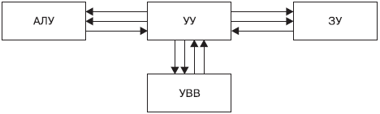

https://www.youtube.com/watch?v=ahOrOWcmNIY
4. Ход занятия
|
Этап Время |
Содержание (кратко) |
Методы и средства обучения |
|
Вводный 5 мин. |
Приветствие. Сообщение темы лекции, цели, плана занятия. |
|
|
20 мин. |
Название и краткое содержание История развития средств вычислительной техники Классификация ЭВМ Принципы организации ЭВМ |
Наглядный метод: метод иллюстраций — использование слайдов.
|
|
10 мин |
Название и краткое содержание видеоматериал « Какой путь прошли компьютеры до наших дней? 1905-2019 [ЭВОЛЮЦИЯ КОМПЬЮТЕРОВ » |
Наглядный метод: метод демонстраций —видео |
|
5 мин. |
Название и краткое содержание Недостатки компьютерных сетей – но использование этих сетей с каждым годом растет |
Проблемный метод (предъявление проблемы и создание проблемной ситуации)
|
|
Заключительный 10 мин |
Подведение итогов. Выводы по теме. Преимущества ЭВМ. Сравнительный анализ
|
Метод проблемного изложения Провести аналогию с видами топологии
|
5.
Рефлексия по занятию (Рефлексия
- это самоанализ, самооценка, "взгляд внутрь себя".
Применительно к урокам, рефлексия - это этап урока, в ходе которого
учащиеся самостоятельно оценивают свое состояние, свои эмоции,
результаты своей деятельности)
На занятиях применяется видеоматериал «Основы компьютерных сетей - принципы работы и оборудование». После обязательно будут опрошены 3-4 студента:
Оценка
своей деятельности.
Студент должен задуматься над такими вопросами: "Что я успел
сделать на занятии? Чего достиг? Что осталось для меня
нерешенным?"
Провести такой вид рефлексии можно, оформив
"лестницу успеха". Студент сам должен оценить, на какой
ступеньке он оказался в результате деятельности во время занятия,
т.е. оценить достигнутые результаты.
6. Домашнее задание
Задание на СРС
Общее: анализ конспекта, выборочное: реферат на тему «Классификация вычислительных машин. Совместимость», «Эволюция вычислительной техники».
Задание на СРСП
- Изучите классификации вычислительных машин и сделать анализ совместимости.
2. Цели, задачи: введение нового материала. Актуализация знаний по предыдущей теме.
2.1. Перечень профессиональных умений, которыми овладевают обучающиеся в процессе учебного занятия
Получение знаний о назначениях и составе беспроводных сетей. Знание классификации беспроводных сетей и умение делать сравнительный анализ с традиционными сетями
2.2 Краткое содержание занятия
Современные компьютеры массового применения – персональные компьютеры имеют достаточно сложную структуру, которая определяет взаимосвязь между аппаратными средствами в технической системе, называемой компьютером. В процессе эволюции аппаратных и программных средств изменялась и структура персонального компьютера, однако без изменений остались пока основные принципы его структурной организации, сформулированные выдающимся математиком, профессором Принстонского университета США Джоном фон Нейманом (1903–1957) и его коллегами в 1946 г.
Сущность этих принципов сводится к следующему:
• информация представляется (кодируется) и обрабатывается (выполняются вычислительные и логические операции) в двоичной системе счисления, информация разбивается на отдельные машинные слова, каждое из которых обрабатывается в компьютере как единое целое;
• машинные слова, представляющие данные (числа) и команды (определяют наименование задаваемых операций), различаются по способу использования, но не по способу кодирования;
• машинные слова размещаются и хранятся в ячейках памяти компьютера под своими номерами, называемыми адресами слов;
• последовательность команд (алгоритм) определяет наименование производимых операций и слова (операнды), над которыми производятся эти операции, при этом алгоритм, представленный в форме операторов машинных команд, называется программой;
• порядок выполнения команд однозначно задается программой.
Составные части, из которых состоит компьютер, называют модулями. Среди всех модулей выделяют основные модули, без которых работа компьютера невозможна, и остальные модули, которые используются для решения различных задач: ввода и вывода графической информации, подключения к компьютерной сети и т.д.
В основу построения большинства ЭВМ положены принципы, сформулированные в 1945 г. Джоном фон Нейманом:
1. Принцип программного управления (программа состоит из набора команд, которые выполняются процессором автоматически друг за другом в заданной последовательности).
2. Принцип однородности памяти (программы и данные хранятся в одной и той же памяти; над командами можно выполнять такие же действия, как и над данными).
3. Принцип адресности (основная память структурно состоит из пронумерованных ячеек).
ЭВМ, построенные на этих принципах, имеют классическую архитектуру (рис.1).

Рис. 1. Классическая структура компьютера
где, АЛУ (арифметико-логическое устройство) – выполняет арифметические и логические операции над информацией, представленной в двоичном коде, т. е. обеспечивает выполнение процедур по обработке данных;
УУ (устройство управления) – организует процесс выполнения программ;
ЗУ (запоминающее устройство) – предназначено для размещения и хранения последовательности команд (программ) и данных;
УВВ (устройства ввода-вывода) – обеспечивают ввод и вывод данных из компьютера для установления прямой и обратной связи между пользователем и компьютером;
С помощью какого-либо устройства ввода в ЗУ вводится программа. УУ считывает содержимое ячейки памяти ЗУ, где находится первая команда, и организует ее выполнение. Эта команда может задавать выполнение арифметических и логических операций над данными с помощью АЛУ, чтение из памяти данных для выполнения этих операций, вывод данных на устройство вывода и т. д. Затем выполняется вторая команда, третья и т. д. УУ выполняет инструкции программы автоматически.
2.3. Контрольные вопросы:
1. Что понимают под терминами «вычислительная техника», «компьютер», «электронно-вычислительная техника»?
2. Какие типы устройств использовались для выполнения вычислительных операций?
3. Что понимается под термином «поколение ЭВМ»?
4. Какие поколения выделяют в истории развития ЭВМ?
5. Как эволюционировала элементная база компьютеров от поколения к поколению?
6. По каким признакам можно классифицировать ЭВМ?
7. В чем разница между сервером и рабочей станцией?
8. Что понимается под «архитектурой ЭВМ»?
9. Какие принципы организации ЭВМ называют «принципами фон Неймана»?
10. В чем заключается принцип открытой архитектуры?
11. В чем заключается магистрально-модульный принцип построения компьютера?
12. Какие устройства размещаются на материнской плате?
13. Какие виды компьютерной памяти вы знаете?
14. Какие устройства относятся к устройствам ввода/вывода? 15. Опишите структурную блок-схему персонального компьютера.
16. Что называют конфигурацией вычислительной техники?
2.4. Глоссарий
Глоссарий
|
На русском языке |
На казахском языке |
На английском языке |
|
Адаптер |
Адаптер |
Adapter |
|
аппаратное устройство или программный компонент, преобразующий передаваемые данные из одного представления в другое |
||
|
Драйвер |
Драйвер |
Driver |
|
компьютерное программное обеспечение (программа-посредник), с помощью которого другое программное обеспечение (операционная система) получает доступ к аппаратному обеспечению некоторого устройства. |
||
|
Интерфейс |
Интерфейс |
Interface |
|
стандартизированная система сигналов и вид связи между отдельными устройствами |
||
|
Кулер |
Кулер |
Cooler |
|
система охлаждения процессора, представляющая собой систему из теплоотводящего радиатора и вентилятора. |
||
3. Оснащение занятия
3.1 Учебно-методическое оснащение, справочная литература
Основная:
1.Губарев В.Г. Программное обеспечение и операционные системы ПК. М.: Феникс, 2012. 382 с.
2.
Фигурнов В. Э. IBM PC для пользователя, 6-е издание, переработанное и
дополненное. M.: Инфра-М, 2006. 432с.
3. Уинн Л. Рош. Библия по
модернизации персонального компьютера. М.: Тивали-Стиль, 2005. 378
с.
4. Леонтьев В.П. Новейшая энциклопедия персонального компьютера
2003. М.: ОЛМА-ПРЕСС, 2009. 957 с.
5. Ибрагим К.Ф. Устройство и
настройка ПК: Перевод с английского. М.: Бином, 2010. 368 с.
6.
Столлингс У. Структурная организация и архитектура компьютерных
систем. М.: Вильямс, 2012. 896 с.
7. Леонтьев Б.К. Upgrade:
Пособие по модернизации компонентов персонального компьютера. М.:
Майор, 2013. 624 с.
8. Шумилин В.К. Пособие по безопасной работе
на персональных компьютерах. М.: НЦ ЭНАС, 2011. 28 с.
9. Еремин
Е.А. Популярные лекции об устройстве компьютера. БХВ-Петербург, 2013.
272 с.
Дополнительная:
7. https://ru.wikipedia.org/wiki/
8. https://ru.wikipedia.org/wiki/История_вычислительной_техники
9. https://ru.wikipedia.org/wiki/ Статья «Архитектура фон Неймана».
10. http://book.kbsu.ru/theory/chapter3/1_3.html (Классификация компьютеров)
11. http://edu.dvgups.ru/metdoc/its/izisk/informat/metod/3/frame/2.htm#_Toc217156137
12. http://wiki.mvtom.ru/index.php/Классификация_ЭВМ
13. http://wiki.mvtom.ru/index.php/Этапы_развития_вычислительной_техники
14. http://www.probios.ru/options/cpu/ 15. http://cssblok.ru/computer/osnblkomp.html (Основные блоки компьютера)
3.2 Техническое оснащение, материалы (слайды, видеоматериалы )